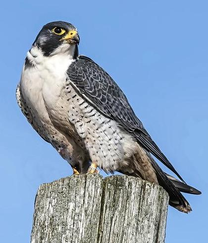

Introducing the Falcon!
Falcons are super fast birds that can fly really high and dive down to catch their food.
They mostly eat smaller birds and animals like mice, and they have sharp eyes to spot prey from far away.
Falcons are cool because they can reach speeds of over 200 miles per hour when diving, which makes them one of the fastest animals on Earth.
People think they are really smart and can be trained for hunting.
Falcons live in lots of places, from deserts to cities, and some even make their nests on tall buildings.
Seeing a falcon fly is really exciting because they look so graceful and powerful at the same time.